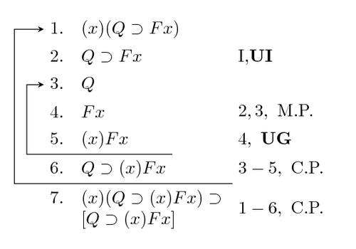

Logic
Summary, Quick and Simple
The study of logic is the study of fundamental reasoning. When we reason out our assertions and our arguments, we (generally) use certain methods of thought to produce arguments that make sense and are true. Philosophical logic is the study of these methods. The most basic methods we use to organize our thinking are called logical connectives. They link each piece of our argument to each other in a way that makes sense. They are so basic that when we see them used properly, we thing, "oh, of course." The five basic truth-functional (or true/false binary based) logical connectives are the AND statement (also known as a conjunction, which means any addition or coupling), the OR statement (also known as a disjunction, which means as the word often means: either/or), the IF/THEN statement (also known as a conditional), the IF AND ONLY IF statement (or the biconditional, which is equivelent to "if A, then B AND if B, then A", as well as the equal statement, or A=B), and the NOT statement (also known as negation).
Table of Truth-Functional Connectives
Below is a table for all of the truth-functional logical connectives (all of the logical statements described above). When I say they are "truth-function connectives" I mean that they are words that will produce sentences that are true or false depending on whether or not the words they connect are true or false. The "~" is notation for "Is not P." The "&" is what it means in normal English. The "v" in "PvQ" means "P or Q." The one directional arrow stands for "If P then Q" and the double arrow is a biconditional (P is true if and only if Q is true).
| P | Q | ~P | ~Q | P&Q | PvQ | P->Q | P<->Q |
|---|---|---|---|---|---|---|---|
| T | T | F | F | T | T | T | T |
| T | F | F | T | F | T | F | F |
| F | T | T | F | F | T | T | F |
| F | F | T | T | F | F | T | T |
As you see in the table, if I say "A(true) and B(true)" I am saying something that is true: A and B are both true so the sentence itself is true. But if I say "A and B" when A is true and B is false then I am saying that both A and B are the case, which is not the case since B is false. In this case, the sentence "A and B" is false.
Why it's important to think about
Beyond the benefits of thinking logically, the study of logic has given us the basic building blocks for computer programming languages. If-then statements, loops, concatenation of strings, etc. are all possible because of what we know through the study of logic about the structuring of functional thought